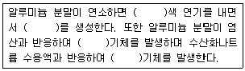

위험물기능장 (2010-07-11 기출문제)
1과목: 임의구분
1. 다음 중 혼재 가능한 위험물들로 짝지은 것으로 옳은 것은? (단, 지정수량의 5배인 경우이다.)
- 피리딘과 염소산칼륨
- 등유와 질산
- 테레핀유와 적린
- 탄화칼슘과 과염소산
(정답률: 85%)

2. 다음 물질 중에서 색상이 나머지 셋과 다른 하나는?
- 중크롬산나트륨
- 질산칼륨
- 아염소산나트륨
- 염소산나트륨
(정답률: 74%)
3. 초유폭약(ANFO)를 제조하기 위해 경유에 혼합하는 제1류 위험물은?
- 질산코발트
- 질산암모늄
- 요오드산칼륨
- 과망간산칼륨
(정답률: 91%)
4. 질소 3.5g 은 몇 mol 에 해당하는가?
- 1.25
- 0.125
- 2.5
- 0.25
(정답률: 70%)
5. 토출량이 5m3/min 이고 토출구의 유속이 2m/s 인 펌프의 구경은 몇 mm 인가?
- 330
- 230
- 130
- 120
(정답률: 78%)
6. 위험물안전관리에 관한 세부기준의 산화성 시험방법 중 분립상 물품의 산화성으로 인한 위험성의 정도를 판단하기 위한 연소시험에 있어서 표준물질의 연소시험에 대한 설명으로 옳은 것은?
- 표준물질과 목분을 중량비 1:1로 섞어 혼합물 30g을 만든다.
- 표준물질과 목분을 중량비 2:1로 섞어 혼합물 30g을 만든다.
- 표준물질과 목분을 중량비 1:1로 섞어 혼합물 60g을 만든다.
- 표준물질과 목분을 중량비 2:1로 섞어 혼합물 60g을 만든다.
(정답률: 79%)
7. 인화점이 낮은 것에서 높은 것의 순서로 옳게 나열한 것은?
- 가솔린 → 톨루엔 → 벤젠
- 벤젠 → 가솔린 → 톨루엔
- 가솔린 → 벤젠 → 톨루엔
- 벤젠 → 톨루엔 → 가솔린
(정답률: 80%)
8. 백색 또는 담황색 고체로 수산화칼륨 용액과 반응하여 포스핀가스를 생성하는 것은?
- 황린
- 트리메틸알루미늄
- 황화인
- 유황
(정답률: 76%)
9. 다음 위험물 품명에서 지정수량이 나머지 셋과 다른 하나는?
- 질산에스테르류
- 니트로화합물
- 아조화합물
- 히드라진유도체
(정답률: 84%)
10. 이동탱크저장소에 설치하는 자동차용소화기의 설치기준으로 옳지 않은 것은?
- 무상의 강화액 8L 이상 (2개 이상)
- 이산화탄소 3.2kg 이상 (2개 이상)
- 소화분말 2.2kg 이상 (2개 이상)
- CF2ClBr 2L 이상 (2개 이상)
(정답률: 85%)
11. 위험물안전관리자 1인을 중복하여 선임할 수 있는 경우가 아닌 것은?
- 동일 구내에 있는 15개의 옥내저장소를 동일인이 설치한 경우
- 보일러ㆍ버너로 위험물을 소비하는 장치로 이루어진 6개의 일반취급소와 그 일반취급소에 공급하기 위한 위험물을 저장하는 저장소(일반취급소 및 저장소가 모두 동일구내에 있는 경우에 한한다.)를 동일인이 설치한 경우
- 3개의 제조소(위험물 최대수량 : 지정수량 500배)와 1개의 일반취급소(위험물 최대수량 : 지정수량 1000 배)가 동일구내에 위치하고 있으며 동일인이 설치한 경우
- 위험물을 차량에 고정된 탱크 또는 운반용기에 옮겨담기 위한 3개의 일반취급소와 그 일반취급소에 공급하기 위한 위험물을 저장하는 저장소를 동일인이 설치하고 일반취급소간의 거리가 300미터 이내인 경우
(정답률: 85%)
12. 제3류 위험물 옥내탱크저장소로 허가를 득하여 사용하고 있는 중에 변경허가를 득하지 않고 위험물 시설을 변경할 수 있는 경우는?
- 옥내저장탱크를 교체하는 경우
- 옥내저장탱크에 직경 200mm의 맨홀을 신설하는 경우
- 옥내저장탱크를 철거하는 경우
- 배출설비를 신설하는 경우
(정답률: 81%)
13. 순수한 벤젠의 온도가 0℃ 일 때에 대한 설명으로 옳은 것은?
- 액체상태이고 인화의 위험이 있다.
- 고체상태이고 인화의 위험은 없다.
- 액체상태이고 인화의 위험은 없다.
- 고체상태이고 인화의 위험이 있다.
(정답률: 63%)
14. 포름산의 지정수량으로 옳은 것은?
- 400리터
- 1000리터
- 2000리터
- 4000리터
(정답률: 73%)
15. 유지의 비누화값은 어떻게 정의 되는가?
- 유지 1g을 비누화시키는데 필요한 KOH의 mg 수
- 유지 10g을 비누화시키는데 필요한 KOH의 mg 수
- 유지 1g을 비누화시키는데 필요한 KCl의 mg 수
- 유지 10g을 비누화시키는데 필요한 KCl의 mg 수
(정답률: 79%)
16. 27℃, 5기압의 산소 10L 를 100℃, 2기압으로 하였을 때 부피는 몇 L 가 되는가?
- 15
- 21
- 31
- 46
(정답률: 62%)
17. 제5류 위험물 중 제조소의 위치ㆍ구조 및 설비 기준상 안전거리 기준, 담 또는 토제의 기준 등에 있어서 강화되는 특례기준을 두고 있는 품명은?
- 유기과산화물
- 질산에스테르류
- 니트로화합물
- 히드록실아민
(정답률: 66%)
18. 이동탱크저장소에 의한 위험물 운송시 위험물운송자가 휴대하여야 하는 위험물안전카드의 작성대상에 관한설명으로 옳은 것은?
- 모든 위험물에 대하여 위험물안전카드를 작성하여 휴대하여야 한다.
- 제1류, 제3류 또는 제4류 위험물을 운송하는 경우에 위험물안전카드를 작성하여 휴대하여야 한다.
- 위험등급Ⅰ 또는 위험등급Ⅱ에 해당하는 위험물을 운송하는 경우에 위험물안전카드를 작성하여 휴대하여야 한다.
- 제1류, 제2류, 제3류, 제4류(특수인화물 및 제1석유류에 한한다.), 제5류 또는 제6류 위험물을 운송하는 경우에 위험물안전카드를 작성하여 휴대하여야 한다.
(정답률: 86%)
19. 위험물의 저장 기준으로 틀린 것은?
- 옥내저장소에 저장하는 위험물은 용기에 수납하여 저장하여야 한다.(덩어리 상태의 유황 제외)
- 같은 유별에 속하는 위험물은 모두 동일한 저장소에 함께 저장할 수 있다.
- 자연발화할 위험이 있는 위험물을 옥내저장소에 저장하는 경우 동일 품명의 위험물이더라도 지정수량의 10배 이하마다 구분하여 상호간 0.3m 이상의 간격을 두어 저장하여야 한다.
- 용기에 수납하여 옥내저장소에 저장하는 위험물의 경우 온도가 55℃를 넘지 않도록 조치하여야 한다.
(정답률: 84%)
20. 위험물제조소에 옥내소화전 1개와 옥외소화전 1개를 설치하는 경우 수원의 수량을 얼마 이상 확보하여야 하는가? (단, 위험물제조소는 단층 건물이다.)
- 5.4m3
- 10.5m3
- 21.3m3
- 29.1m3
(정답률: 88%)
2과목: 임의구분
21. 염소화규소화합물은 제 몇 류 위험물에 해당하는가?
- 제1류 위험물
- 제2류 위험물
- 제3류 위험물
- 제5류 위험물
(정답률: 79%)
22. 산소 32g 과 질소 56g 을 20℃에서 30L의 용기에 혼합하였을 때 이 혼합기체의 압력은 약 몇 atm 인가?
- 1.4
- 2.4
- 3.4
- 4.4
(정답률: 68%)
23. 다음 위험물 중 해당하는 품명이 나머지 셋과 다른 하나는?
- 큐멘
- 아닐린
- 니트로벤젠
- 염화벤조일
(정답률: 77%)
24. 산화프로필렌에 대한 설명으로 틀린 것은?
- 물, 알코올 등에 녹는다.
- 무색의 휘발성 액체이다.
- 구리, 마그네슘 등과 접촉은 위험하다.
- 냉각소화는 유효하나 질식소화는 효과가 없다.
(정답률: 72%)
25. 측정하는 유체의 압력에 의해 생기는 금속의 탄성변형을 기계식으로 확대 지시하여 압력을 측정하는 것은?
- 마노미터
- 시차액주계
- 브르돈관압력계
- 오리피스미터
(정답률: 88%)
26. 이산화탄소소화약제에 대한 설명 중 틀린 것은?
- 임계온도가 0℃ 이하이다.
- 전기 절연성이 우수하다.
- 공기보다 약 1.5배 무겁다.
- 산소와 반응하지 않는다.
(정답률: 79%)
27. 차아염소산칼슘에 대한 설명으로 옳지 않은 것은?
- 살균제, 표백제로 사용된다.
- 화학식은 Ca(ClO)2 이다.
- 자극성은 없지만 강한 환원력이 있다.
- 지정수량은 50kg 이다.
(정답률: 84%)
28. 다음 중 제6류 위험물이 아닌 것은?
- 농도가 36중량 퍼센트인 H2O2
- IF5
- 비중 1.49인 HNO3
- 비중 1.76인 HClO3
(정답률: 75%)
29. 위험물안전관리법령상 자기반응성 물질에 해당되지않는 것은?
- 무기과산화물
- 유기과산화물
- 히드라진유도체
- 디아조화합물
(정답률: 81%)
30. 50℃에서 유지하여야 할 알킬알루미늄 운반용기의 공간 용적기준으로 옳은 것은?
- 5% 이상
- 10% 이상
- 15% 이상
- 20% 이상
(정답률: 68%)
31. 크산토프로테인 반응과 관계 되는 물질은?
- 과염소산
- 벤젠
- 무수크롬산
- 질산
(정답률: 83%)
32. 할로겐소화약제인 C2F4Br2에 대한 설명으로 옳은 것은?
- 하론번호가 2420 이며, 상온, 상압에서 기체이다.
- 하론번호가 2402 이며, 상온, 상압에서 기체이다.
- 하론번호가 2420 이며, 상온, 상압에서 액체이다.
- 하론번호가 2402 이며, 상온, 상압에서 액체이다.
(정답률: 70%)
33. 위험물의 자연발화를 방지하기 위한 방법으로 틀린 것은?
- 통풍이 잘 되게 한다.
- 습도를 높게 한다.
- 저장실의 온도를 낮춘다.
- 열이 축적되지 않도록 한다.
(정답률: 90%)
34. 제조소등의 소화난이도 등급을 결정하는 요소가 아닌것은?
- 위험물제조소 : 위험물 취급설비가 있는 높이, 연면적
- 옥내저장소 : 지정수량, 연면적
- 옥외탱크저장소 : 액표면적, 지반면으로부터 탱크 옆판 상단까지 높이
- 주유취급소 : 연면적, 지정수량
(정답률: 67%)
35. 제2류 위험물에 대한 다음 설명 중 적합하지 않은 것은?
- 제2류 위험물을 제1류 위험물과 접촉하지 않도록 하는 이유는 제2류 위험물이 환원성물질이기 때문이다.
- 황화린, 적린, 유황은 위험물안전관리법상의 위험등급Ⅰ에 해당하는 물품이다.
- 칠황화린은 조해성이 있으므로 취급에 주의하여야 한다.
- 알루미늄분, 마그네슘분은 저장ㆍ보관시 할로겐원소와 접촉을 피하여야 한다.
(정답률: 71%)
36. 위험물안전관리법령상 “고인화점 위험물” 이란?
- 인화점이 섭씨 100도 이상인 제4류 위험물
- 인화점이 섭씨 130도 이상인 제4류 위험물
- 인화점이 섭씨 100도 이상인 제4류 위험물 또는 제3류 위험물
- 인화점이 섭씨 100도 이상인 위험물
(정답률: 86%)
37. 칼륨과 나트륨의 공통적 특징이 아닌 것은?
- 은백색의 광택이 나는 무른 금속이다.
- 일정온도 이상 가열하면 고유의 색깔을 띠며 산화한다.
- 액체 암모니아에 녹아서 주황색을 띤다.
- 물과 심하게 반응하여 수소를 발생한다.
(정답률: 79%)
38. 니트로글리세린에 대한 설명으로 옳지 않은 것은?
- 순수한 액은 상온에서 적색을 띤다.
- 물에 녹지 않는다.
- 겨울철에는 동결할 수 있다.
- 비중은 약 1.6으로 물보다 무겁다.
(정답률: 70%)
39. 0.2N HCl 500mL 에 물을 가해 1L로 하였을 때 pH는 약 얼마인가?
- 1.0
- 1.3
- 2.0
- 2.3
(정답률: 74%)
40. 제4류 위험물에 적응성이 있는 소화설비는 다음 중 어느 것인가?
- 포소화설비
- 옥내소화전설비
- 봉상강화액소화기
- 옥외소화전설비
(정답률: 87%)
3과목: 임의구분
41. 다음 중 요오드화 값이 가장 큰 것은?
- 아마인유
- 채종유
- 올리브유
- 피마자유
(정답률: 86%)
42. 다음 ( )안에 알맞은 것을 순서대로 옳게 나열한 것은?

- 백, Al2O3, 산소, 수소
- 백, Al2O3, 수소, 수소
- 노란, Al2O5, 수소, 수소
- 노란, Al2O5, 산소, 수소
(정답률: 92%)
43. 지정수량의 10배를 취급하는 경우 위험물의 혼재에 관한설명으로 틀린 것은?
- 제1류 위험물은 제2류 위험물, 제3류 위험물, 제4류 위험물 및 제5류 위험물과 각각 혼재할 수 없다.
- 제3류 위험물은 제4류 위험물 및 제5류 위험물과 각각 혼재할 수 있다.
- 제4류 위험물은 제2류 위험물, 제3류 위험물 및 제5류 위험물과 각각 혼재할 수 있다.
- 제6류 위험물은 제2류 위험물, 제3류 위험물, 제4류 위험물 및 제5류 위험물과 각각 혼재할 수 없다.
(정답률: 71%)
44. 다음 중 탄화칼슘의 저장방법으로 가장 적합한 것은?
- 등유 속에 저장한다.
- 메탄올 속에 저장한다.
- 질소가스로 봉입한다.
- 수증기로 봉입한다.
(정답률: 78%)
45. KClO3 의 성질이 아닌 것은?
- 분자량은 약 122.5 이다.
- 불연성 물질이다.
- 분해방지제로 MnO2 를 사용한다.
- 화재발생시 주수에 의해 냉각소화가 가능하다.
(정답률: 72%)
46. 흑자색 또는 적자색 결정인 제1류 위험물로서 물, 에탄올, 빙초산 등에 녹으며 분해온도가 240℃ 이고 비중이 약 2.7 인 물질은?
- NaClO2
- KMnO4
- (NH4)2Cr2O7
- K2Cr2O7
(정답률: 60%)
47. 메탄 2L를 완전연소 하는데 필요한 공기 요구량은 약몇 L 인가? (단, 표준상태를 기준으로 하고 공기 중의 산소는 21v% 이다.)
- 2.42
- 9.51
- 15.32
- 19.04
(정답률: 62%)
48. 96g 의 메탄올이 완전연소 되면 몇 g의 물이 생성되는가?
- 36
- 64
- 72
- 108
(정답률: 71%)
49. 제6류 위험물 중 과염소산의 위험성에 대한 설명으로 틀린 것은?
- 강력한 산화제이다.
- 가열하면 유독성 가스를 발생한다.
- 고농도의 것은 물에 희석하여 보관해야 한다.
- 불연성이지만 유기물과 접촉시 발화의 위험이 있다.
(정답률: 76%)
50. 톨루엔의 위험성에 대한 설명으로 적합하지 않은 것은?
- 증기비중이 1보다 크기 때문에 주의해야 한다.
- 연소범위의 하한값이 낮아서 소량이 누출되어도 폭발의 위험성이 있다.
- 벤젠을 포함한 대부분의 제1석유류보다 독성이 강하다.
- 인화점이 상온보다 낮으므로 화재발생에 주의해야 한다.
(정답률: 71%)
51. 위험물의 유 별 구분이 나머지 셋과 다른 하나는?
- 디메틸아연
- 백금분
- 메타알데히드
- 고형알코올
(정답률: 50%)
52. 휘발유를 저장하는 옥내저장소에 같이 저장할 수 있는 물품이 아닌 것은?
- 특수가연물에 해당하는 합성수지류
- 위험물에 해당하지 않는 유기과산화물
- 위험물에 해당하지 아니하는 액체로서 인화점을 갖는 것
- 벽돌
(정답률: 67%)
53. 제5류 위험물 중 질산에스테르류에 대한 설명으로 틀린 것은?
- 산소를 함유하고 있다.
- 염과 질산을 반응시키면 생성된다.
- 니트로셀룰로오스, 질산에틸 등이 해당된다.
- 지정수량은 10kg 이다.
(정답률: 71%)
54. 다음의 위험물 시설에 설치하는 소화설비와 특성 등에 관한 설명 중 위험물 관련 법규내용에 부합하는 것은?
- 제4류 위험물을 저장하는 탱크에 포소화설비를 설치하는 경우에는 이동식으로 할 수 있다.
- 옥내소화전설비, 스프링클러설비 및 이산화탄소 소화설비의 배관은 전용으로 하되 예외규정이 있다.
- 옥내소화전설비와 옥외소화전설비는 동결방지조치가 가능한 장소라면 습식으로 설치하여야 한다.
- 물분무소화설비와 스프링클러설비의 기동장치에 관한 설치기준은 그 내용이 동일하지 않다.
(정답률: 79%)
55. 관리도에서 점이 관리한계 내에 있으나 중심선 한쪽에 연속해서 나타나는 점의 배열현상을 무엇이라 하는가?
- 런
- 경향
- 산포
- 주기
(정답률: 72%)
56. 로트의 크기 30, 부적합품률이 10%인 로트에서 시료의 크기를 5로 하여 랜덤 샘플링할 때, 시료 중 부적합품 수가 1개 이상일 확률은 약 얼마인가? (단, 초기하분포를 이용하여 계산한다.)
- 0.3695
- 0.4335
- 0.5665
- 0.63⑤
(정답률: 57%)
57. 다음 중 브레인스토밍(Brainstorming)과 가장 관계가 깊은 것은?
- 파레토도
- 히스토그램
- 회기분석
- 특성요인도
(정답률: 89%)
58. 작업개선을 위한 공정분석에 포함되지 않는 것은?
- 제품 공정분석
- 사무 공정분석
- 직장 공정분석
- 작업자 공정분석
(정답률: 74%)
59. 로트의 크기가 시료의 크기에 비해 10배 이상 클 때, 시료의 크기와 합격판정개수를 일정하게 하고 로트의 크기를 증가시키면 검사특성곡선의 모양 변화에 대한 설명으로 가장 적절한 것은?
- 무한대로 커진다.
- 거의 변화하지 않는다.
- 검사특성곡선의 기울기가 완만해진다.
- 검사특성곡선의 기울기 경사가 급해진다.
(정답률: 85%)
60. 과거의 자료를 수리적으로 분석하여 일정한 경향을 도출한 후 가까운 장래의 매출액, 생산량 등을 예측하는 방법을 무엇이라 하는가?
- 델파이법
- 전문가패널법
- 시장조사법
- 시계열분석법
(정답률: 72%)